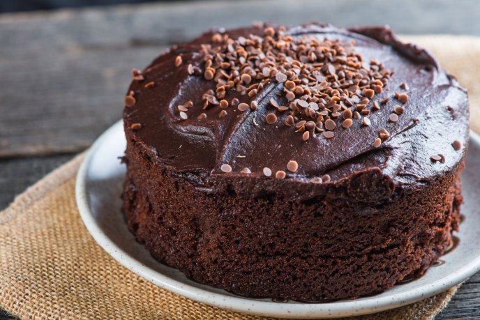

Pastel de chocolate casero

Ingredientes
Para el pastel
- 175 gramos de mantequilla
- 200 gramos de harina de repostería
- 4 huevos
- 150 gramos de azúcar (¾ taza)
- 50 gramos de cacao en polvo
- 1 cucharadita de polvo para hornear
- 25 gramos de maicena
- 1 pizca de sal